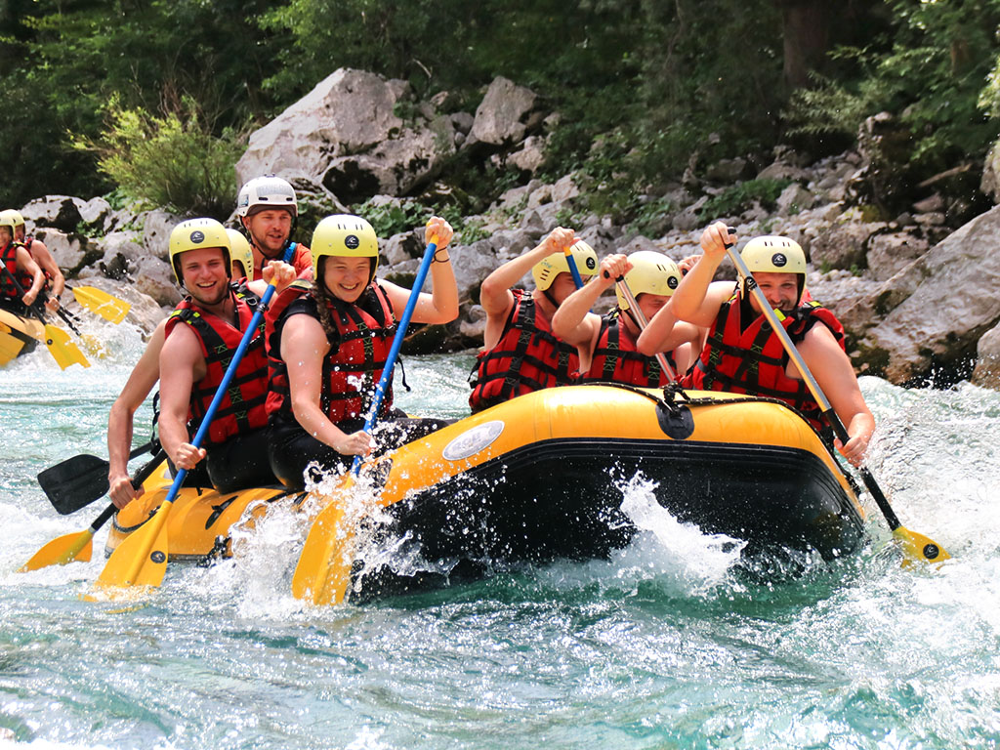
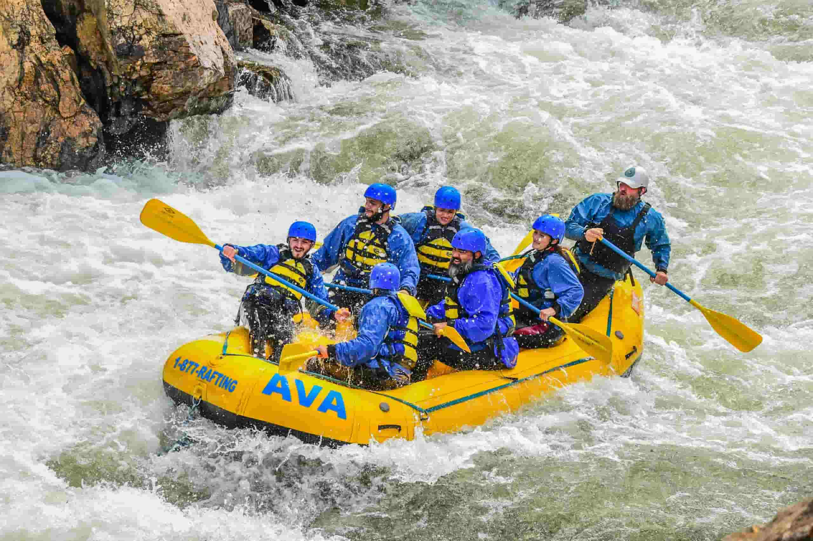
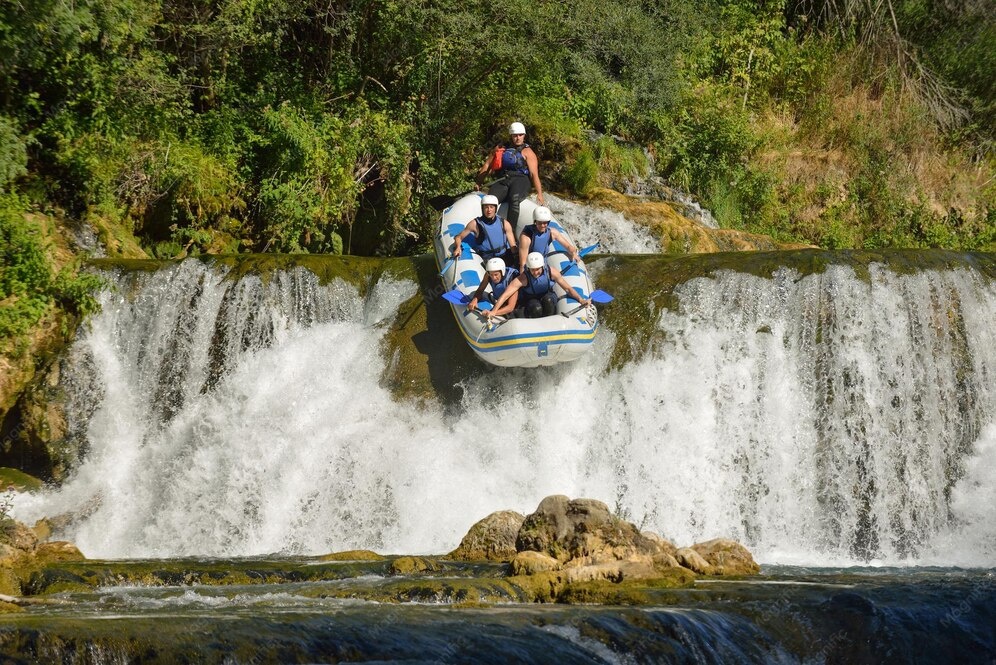

Beginner River Run
Perfect for first-time rafters and families, this guided adventure features gentle Class I and II rapids, beautiful river scenery, and professional guides who provide all the safety equipment and instruction you need.
Need help planning the perfect trip?
Contact Us Today
Perfect for first-time rafters and families, this guided adventure features gentle Class I and II rapids, beautiful river scenery, and professional guides who provide all the safety equipment and instruction you need.

Challenge yourself with exciting Class III and IV rapids while experienced guides lead you through breathtaking river scenery. This trip is ideal for adventurous paddlers looking for more excitement.

Take on powerful rapids, fast-moving currents, and a full day of adventure. Designed for experienced rafters seeking the ultimate white water experience with our highly trained guides.
| Trip | Difficulty | Duration | Price |
|---|---|---|---|
| Beginner River Run | Easy | 2 Hours | $50 |
| Intermediate Rapids | Moderate | 4 Hours | $95 |
| Extreme Challenge | Advanced | Full Day | $180 |